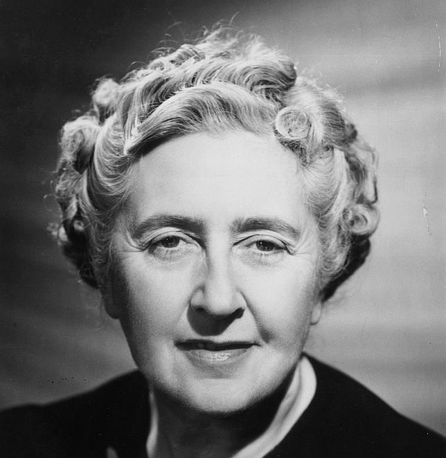

Guia del lector
En un ordre alfabètic convencional a continuació relacionem els principals personatges
que intervenen en aquesta obra
ANDERSON (Greta)
Dama de companyia de Fenella Guteman.
BARTON (Frank)
Tiet de Fenella Guteman.
GUTEMAN Fenella (Ellie)
Esposa de Micheal Rogers.
HARDCASTLE (Claudia)
Germanastra de l'arquitecte Santonix.
LEE (Esther)
Gitana de Market Chadwell.
LIPPINCOTT (Andrew P.)
Advocat, anomenat familiarment "tiet Andrew" per Fenella Guteman.
LLOYD (Standford)
Banquer, encarregat amb l'anterior de la custòdia dels interessos de Fenella.
PHILLPOT (Comandante)
Persona destacaa a la vida de Market Chadwell.
REUBEN (William R. Pardoe)
Anomenat "tiet Reuben", cosí de Fenella.
ROGERS (Michael)
Anomenat també "Mike", protagonista.
ROGERS (Señora)
Mare de Michael.
SANTONIX (Rudolf)
Arquitecte amic de Michael.
SHAW (Doctor)
Del poblat de Market Chadwell.
VAN STUYVESANT (Cora)
Madrastra de Fenella Guteman.
